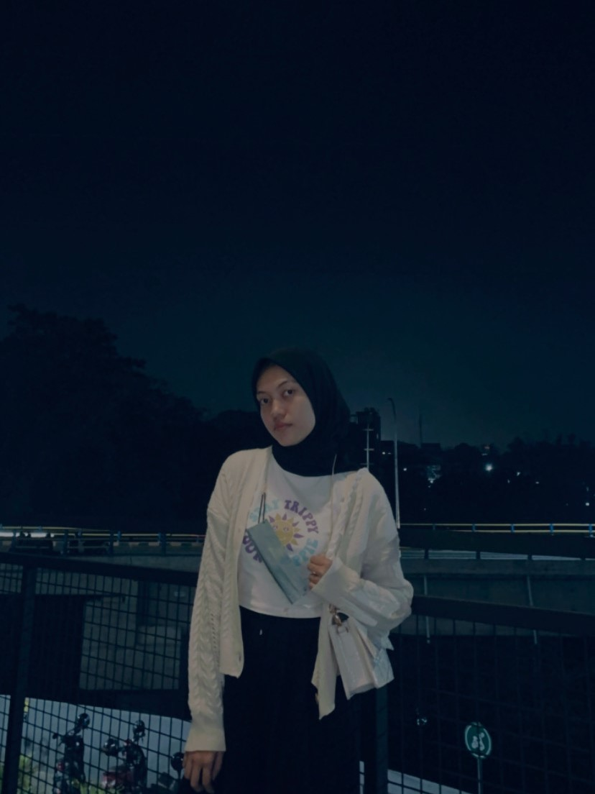

Nur Anisa Firdausy
Tentang Saya
Halo perkenalkan saya Nur Anisa Firdausy biasanya dipanggil Anisa. Saya berumur 21 tahun pada tahun ini, saya berkelahiran di Malang. Saya anak ke 2 dari 3 bersaudara, memiliki adek dan kakak laki-laki. Saya sekarang sedang menempuh pendidikan di Politeknik Negeri Malang. Dengan jurusan Teknologi Informasi, dan prodi D4 Sistem Informasi Bisnis (SIB). D4 SIB merupakan jurusan baru pada Politeknik Negeri Malang, sebelumnya nama dari prodi D4 SIB adalah D3 MI (Manajemen Informatika). Pada tahun ini angkatan saya dirubah dari D3 MI menjadi D4 SIB. Untuk mata kuliah yang saya pernah saya tempuh, saya paling tertarik pada Android namun memakai framework flutter.
Keahlian Saya
- UI/UX Designer
- Penyusunan Data
- Android Dev
Pendidikan Saya
- 2013 - 2016 : SMPN 1 Singosari
- 2016 - 2019 : SMAN 1 Singosari
- 2020 - Sekarang : Politeknik Negeri Malang
 |
|
 |
|